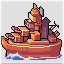

The most expensive of the traditional transport units, Landers are the only Transports capable of carrying Land Vehicles.
Unlike other Transports, a Lander may carry up to two of any Land Unit. Loaded APCs count as one unit when Loaded on a Lander. Units in a Lander will be protected from harm until they are unloaded or the Lander is destroyed. As with all Transports, if a Lander is destroyed, all Loaded units are lost as well.
| Cost | 12000 |
| Movement | 6 (Lander) |
| Fuel | 99 (-1) |
| Vision | 1 |
| Special Commands | Load |
| Targetable Unit | Damage Taken |
|---|---|
| Tank | 10 |
| Medium Tank | 35 |
| Artillery | 55 |
| Rocket | 60 |
| Neotank | 50 |
| Megatank | 75 |
| Piperunner | 60 |
| B-Copter | 25 |
| Bomber | 95 |
| Stealth | 65 |
| Battleship | 95 |
| Sub | 95 |
Specializing in supporting other Sea and Copter units, Cruisers are uncommonly built (defense-wise) units with a limited range of targets.
The primary function of a Cruiser is to protect other Naval Units from Subs. They (along with other Subs) are the only units capable of attacking a submerged Sub. Cruisers deal high damage to Subs with their missiles, and take little damage from Subs, even if the Sub attacks at full HP.
The second use of a Cruiser is to use its Secondary weapon to fight Air units. The Cruiser's Anti-Air gun will deal very high damage to Copters and Stealths, and moderate damage to Fighters and Bombers.
| Cost | 18000 |
| Movement | 6 (Sea) |
| Fuel | 99 (-1) |
| Range | 1 |
| Primary Weapon | Anti-Sub Missiles |
| Ammo | 9 |
| Secondary Weapon | Anti-Air Gun |
| Vision | 3 |
| Special Commands | Load (Copters Only) |
| Targetable Unit | Damage Given | Damage Taken |
|---|---|---|
| Tank | - | 5 |
| Medium Tank | - | 55 |
| Artillery | - | 65 |
| Rocket | - | 85 |
| Neotank | - | 55 |
| Megatank | - | 65 |
| Piperunner | - | 85 |
| T-Copter | 115 | - |
| B-Copter | 115 | 55 |
| Fighter | 55 | - |
| Bomber | 65 | 85 |
| Stealth | 100 | 35 |
| Black Bomb | 120 | - |
| Sub | 90 | 25 |
| Carrier | 5 | - |
| Black Boat | 25 | - |
 Boasting high range, Battleships, are powerful, if expensive, Indirect Combat attackers.
Battleships have the highest possible Maximum Range of all the Indirect Combat units capable of hitting Land Units. Battleships also do considerably high damage to almost any unit it can hit, and can deal significant damage to Mega Tanks.
| Cost | 28000 |
| Movement | 5 (Sea) |
| Fuel | 99 (-1) |
| Range | 2-6 |
| Primary Weapon | Cannon |
| Ammo | 9 |
| Secondary Weapon | None |
| Vision | 2 |
| Targetable Unit | Damage Given | Damage Taken |
|---|---|---|
| Infantry | 95 | - |
| Mech | 90 | - |
| Recon | 90 | - |
| APC | 80 | - |
| Tank | 80 | 1 |
| Medium Tank | 55 | 10 |
| Anti-Air | 85 | - |
| Artillery | 80 | 40 |
| Rocket | 85 | 55 |
| Missile | 90 | - |
| Neotank | 50 | 15 |
| Megatank | 45 | 25 |
| Piperunner | 80 | 55 |
| B-Copter | - | 25 |
| Bomber | - | 75 |
| Stealth | - | 45 |
| Lander | 95 | - |
| Cruiser | 95 | - |
| Battleship | 50 | 50 |
| Sub | 95 | 55 |
| Carrier | 60 | - |
| Black Boat | 95 | - |
The most niche of all the Sea Units, Subs are effective at ship hunting and scouting, but little else.
Subs excel at naval combat; they deal high damage to all Sea units, with the exception of Cruisers. They are completely incapable of attacking Land or Air units.
Subs are unique with their Submerge command. When told to Submerge, Subs become invisible to enemy forces, only revealing themselves when any enemy unit is adjacent to the Sub. Additionally, submerged subs may only be attacked by Cruisers and other Subs. In exchange for these benefits, they drain their fuel much more rapidly (5 fuel per day compared to 1 fuel per day when surfaced), meaning Subs may only stay submerged for a short amount of time before needing to refuel from a Port, Black Boat, or APC.
| Cost | 20000 |
| Movement | 5 (Sea) |
| Fuel | 60 (-1) |
| Range | 1 |
| Primary Weapon | Torpedo |
| Ammo | 6 |
| Secondary Weapon | None |
| Vision | 5 |
| Special Commands | Dive |
| Targetable Unit | Damage Given | Damage Taken |
|---|---|---|
| Tank | - | 1 |
| Medium Tank | - | 10 |
| Artillery | - | 60 |
| Rocket | - | 85 |
| Neotank | - | 15 |
| Megatank | - | 45 |
| Piperunner | - | 85 |
| B-Copter | - | 25 |
| Bomber | - | 95 |
| Stealth | - | 55 |
| Lander | 95 | - |
| Cruiser | 25 | 90 |
| Battleship | 55 | 95 |
| Sub | 55 | 55 |
| Carrier | 75 | - |
| Black Boat | 95 | - |
The most expensive unit in the game, Carriers provide both support for friendly Air units, as well as Area Denial from enemy Air units.
As its name implies, the Carrier is capable of loading and transporting up to any two Air units on deck. Air units loaded on the carrier will have their Fuel and Ammo completely refilled at the beginning of the day. If a Stealth is Hidden when it lands on a Carrier, it will remain hidden when taking off of it, allowing for a relatively safe spot for a Stealth to refuel in combat. As with any unit capable of transporting, if a Carrier is sunk, any aircraft on board is immediately destroyed as well.
Outside of transporting Air units, the Carrier also functions as an Indirect Combat unit, capable of dealing high damage to enemy Air Units. The amount of damage a Carrier can do is on par with that of Missiles, but with a much larger range, making it a much higher threat to Air units.
| Cost | 30000 |
| Movement | 5 (Sea) |
| Fuel | 99 (-1) |
| Range | 3-8 |
| Primary Weapon | Missiles |
| Ammo | 9 |
| Secondary Weapon | None |
| Vision | 4 |
| Special Commands | Load (Air Units) |
| Targetable Unit | Damage Given | Damage Taken |
|---|---|---|
| Tank | - | 1 |
| Medium Tank | - | 10 |
| Artillery | - | 45 |
| Rocket | - | 60 |
| Neotank | - | 15 |
| Piperunner | - | 60 |
| T-Copter | 115 | - |
| B-Copter | 115 | 25 |
| Fighter | 100 | - |
| Bomber | 100 | 75 |
| Stealth | 100 | 45 |
| Cruiser | - | 5 |
| Battleship | - | 60 |
| Sub | - | 75 |
The most inexpensive Sea unit, Black Boats are unique in that they can repair other units.
To do this, the Black Boat must be adjacent to the allied unit in need of repair. When this is done, one can select the "Repair" command, and select the unit they wish to repair. Once processed, the Black Boat will repair the target unit for 1 HP, also refilling its Fuel and Ammo in the process. These repairs will cost 10% of the unit in question's deployment cost.
Instructing a Black Boat to repair a full HP unit will not cost anything, but will still refill it's Fuel and Ammo. Units being repaired by Black Boats may still take their turn as normal, so one can repair a unit before engaging in combat, where applicable.
Additionally, Black Boats are capable of transporting and protecting up to two Infantry or Mech units. As with all other transports, if the Black Boat is destroyed, any units being transported will be destroyed as well.
| Cost | 7500 |
| Movement | 7 (Lander) |
| Fuel | 60 (-1) |
| Vision | 1 |
| Special Commands | Repair, Load |
| Targetable Unit | Damage Taken |
|---|---|
| Tank | 10 |
| Medium Tank | 35 |
| Artillery | 55 |
| Rocket | 60 |
| Neotank | 40 |
| Megatank | 45 |
| Piperunner | 60 |
| B-Copter | 25 |
| Bomber | 95 |
| Stealth | 65 |
| Cruiser | 25 |
| Battleship | 95 |
| Sub | 95 |